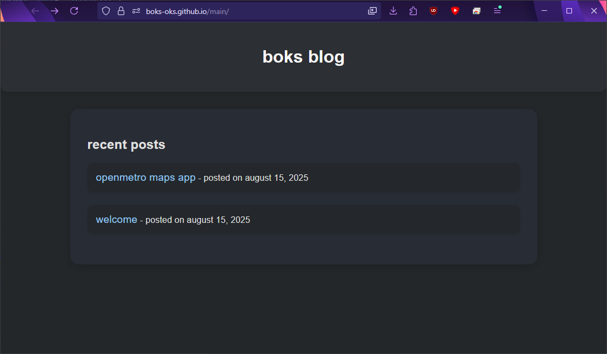

firefox web apps
In the latest Nightly build of Firefox, you can now save web apps as independent windows.
Chromium-based browsers have offered this feature for a while, but it's nice to see Firefox finally having this capability.
It's not exactly like Chromium, though. Unlike Chromium, Firefox still shows the address bar and extensions.
I personally prefer this approach because it still allows you to access the extensions easily.
One thing I don't like is that the app in the Start Menu doesn't use a proper title, instead it uses the first word in the website's URL.
For example, if the website is "https://github.com/", the app will just be titled "Github". It should have proper capitalization: "GitHub".
The app icon is fine, though. It uses the favicon. However, I think a prompt for entering the title (similar to the bookmarks) would be nice.